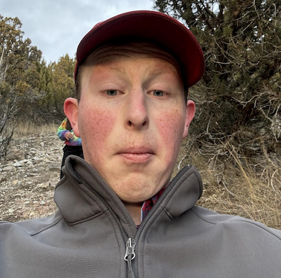
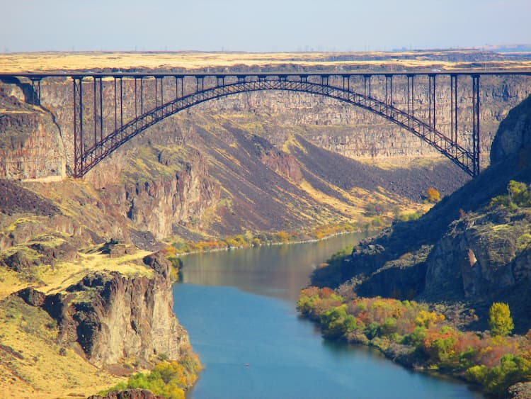

About Me
Hi! I'm Alex Zaugg from Twin Falls Idaho. I'm a Computer Science Major and I still have a few semesters to go. I love to go hiking, create videos, play spikeball, and read.
Idaho

Idaho is a wonderful place with so many different things to do. You can ski, hike, camp, swim, and so much more! The Snake River Canyon and Teton Mountains are definately some highlight spots for me.